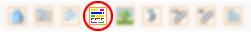
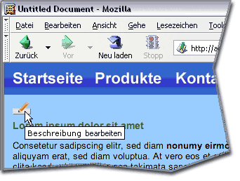
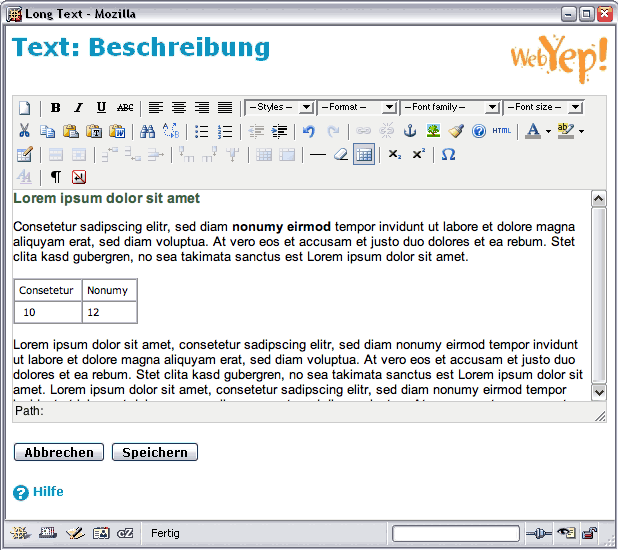
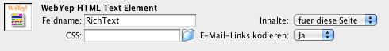

HTML-Text

Das Symbol für das HTML-Text-Element in der Objektpalette
Das HTML-Text-Element ist für längere Textpassagen gedacht - zB. Produktbeschreibungen oder auch ganze Webseiten. Der Text kann in diesem Element mittels HTML formatiert werden. Der HTML Code kann entweder "per Hand" eingegeben werden, oder mit Hilfe eines der unterstützten in-browser HTML-Editoren "TinyMCE", "FCKeditor" oder "CKEditor".
Dieses WebYep Element wird durch folgenden PHP Code repräsentiert:
<?php webyep_richText("Feldname", false, "../stile.css", true); ?> Details...
(siehe auch "Eigenschaften des HTML-Text-Elementes" weiter unten)
- "Feldname": Ein Text – der Name für dieses Element.
- true/false: Ein boolscher Wert – der Gültigkeitsbereich dieses Elementes.
true wenn das Element in allen Seiten den selben Inhalt haben soll (global).
false wenn es auf jeder Seite, auf der es platziert ist, andere Inhalte haben soll. - "../stile.css": Ein Text – der URL einer CSS Datei die innerhalb des WYSIWYG Editors verwendet werden soll - dieser URL ist relativ zum aktuellen Dokument anzugeben.
- true/false: Ein boolscher Wert – gibt an, ob E-Mail-Links im Text kodiert werden sollen.
true wenn E-Mail-Links im Text mittels JavaScript kodiert werden sollen.
false wenn sie als normaler HTML Link ausgegeben werden sollen.

Das HTML-Text-Element in Aktion - durch Klicken auf den Bearbeiten-Knopf ("Beschreibung bearbeiten")
öffnet sich das Text-Bearbeiten-Fenster

Das HTML-Text-Bearbeiten-Fenster, unter Verwendung des TinyMCE HTML-Editors
Auswahl eines in-browser WYSIWYG HTML-Editors
Im einfachsten Fall wird im HTML-Text-Bearbeiten-Fenster ein einfaches Text-Feld zur Eingabe von HTML-Code angezeigt. Durch Installation eines der unterstützten WYSIWYG Editoren kann der HTML-Code aber grafisch erstellt werden, wie in einem Textverarbeitungs- oder Webdesign-Programm.
Unterstützt werden die verbreiteten Editoren "TinyMCE" und "CKEditor". Sie werden nicht vorinstalliert, sondern können von der entsprechenden Website heruntergeladen werden und durch einfaches Hochladen in den "opt" Unterordner des webyep-system/programm Verzeichnisses installiert werden. WebYep erkennt dann automatisch die Präsenz des Editors und verwendet ihn im HTML-Text-Bearbeiten-Fenster.
TinyMCE kann, zum Zeitpunkt der Erstellung dieser Dokumentation, unter der folgenden Adresse heruntergeladen werden:
http://tinymce.moxiecode.com/
CKeditor kann, zum Zeitpunkt der Erstellung dieser Dokumentation, unter der folgenden Adresse heruntergeladen werden:
http://ckeditor.com/
Laden Sie das gewünschte Paket (ZIP- oder TAR-Archiv) von der entsprechenden Website herunter. Nach dem Entpacken des Archivs (extrahieren der ZIP- bzw. TAR-Datei) entsteht bei TinyMCE ein Ordner namens "tinymce". Beim CKeditor entsteht ein Ordner namens "ckeditor". Laden Sie diesen Ordner dann in den "opt" Unterordner des webyep-system/programm Verzeichnisses am Server.
Wenn Sie dann das nächste mal das HTML-Text-Bearbeiten-Fenster öffnen, wird der so installierte WYSIWYG Editor verwendet.
Hinweis: Webbrowser-Unterstützung
Bitte beachten Sie, dass die verschiedenen WYSIWYG Editoren unterschiedliche Webbrowser in unterschiedlichem Maße unterstützten. Der aktuelle diesbezügliche Stand ist den jeweiligen Websites der Editoren zu entnehmen.
Wichtig: Die WYSIWYG Editoren ermöglichen das Formatieren des eingegebenen Textes. Einige bieten aber auch die Möglichkeit, bereits formatierten Text einzufügen (mittels kopieren/einsetzen) – also Text, der bereits z.B. in einem Textverarbeitungsprogramm formatiert wurde. Es hat sich aber herausgestellt, dass dies problematisch ist. Die meisten Textverarbeitungsprogramme generieren leider (vorsichtig ausgedrückt) unvorteilhaften HTML-Code. Selbst wenn unformatierter Text aus solchen Programmen mittels kopieren/einsetzen in den WYSIWYG Editor übertragen wird, gelangt problematischer HTML Code in den Text. Deshalb sollte entweder der Text direkt im WYSIWYG Editor verfasst, oder von einem reinem Text-Editor übertragen werden (wie Notepad unter Windows oder TextEdit, im "reiner Text" Modus, am Mac).
Einstellungen für die WYSIWYG Editoren
Die unterstützten WYSIWYG Editoren haben sehr unterschiedliche Einstellungsmöglichkeiten – welche dies sind, und wie die Einstellungen vorzunehmen sind, ist den jeweiligen Websites der Editoren zu entnehmen. Die Einstellungen können in eigenen Setup-Dateien gespeichert werden, die im webyep-system/programm/opt Ordner platziert werden müssen. Für TinyMCE muss diese Datei den Namen tinymce_init.php und für CKEditor ckeditor_init.php (klicken Sie auf den Dateinamen um einen Beispielinhalt für diese Datei zu sehen).
Für den CKEditor besteht zusätzlich die Möglichkeit, das Stile-Popup-Menü zu konfigurieren. Dazu werden die Stildefinitionen in der Datei ckeditor_styles.js im webyep-system/programm/opt Ordner abgelegt (klicken Sie auf den Dateinamen um einen Beispielinhalt für diese Datei zu sehen). Details zur Syntax dieser Stildefinition finden Sie auf der Website von CKEditor (URL siehe oben).
Hinzufügen optionaler Dateimanager
Es gibt Zusatzprogramme für jeden der unterstützten WYSIWYG-Editoren, die Ihnen erlauben, Dateien direkt aus dem Editor hochzuladen und zu verwalten.
Derzeit werden die folgenden Dateimanager von WebYep unterstützt:
CKFinder für den CKEditor.
MCImageManager für TinyMCE.
Wichtig: Bitte beachten Sie, dass dies Produkte von Drittherstellern sind. Objective Development ist in keiner Weise mit diesen Herstellern verbunden und ist daher nicht für Fehler und Probleme mit dieser Software verantwortlich. Jeder Dateimanager hat seine Stärken und Schwächen und wir können nicht entscheiden, welcher Ihren Bedürfnissen besser entspricht.
Falls Sie einen der oben erwähnten Dateimanager verwenden wollen, so finden Sie hier detaillierte Anleitungen zur Installation und Konfiguration:
Platzierung des HTML-Text-Elementes
Beachten Sie bitte, dass das HTML-Text-Element HTML-Code generiert (wie Tabellen oder Listen). Daher ist es wichtig innerhalb welches HTML-Tags sie das HTML-Text-Element platzieren!
Am sichersten ist es, wenn Sie es in einen <DIV>-Tag platzieren. Problematisch kann hingegen zB. das Setzen in einen <P>-Tag (Absatz) werden, da Listen (<UL>) oder Tabellen (<TABLE>) in einem Absatz laut HTML-Spezifikation nicht erlaubt sind.
Um zu ermitteln, innerhalb welchen Tags sich ein WebYep HTML-Text-Element befindet, selektieren Sie es im Dreamweaver und betrachten Sie dann den Tag-Selektor (am linken unteren Fensterrand): Die Reihe von dort gelisteten Tags gibt an, in welche Tags das Element eingebettet ist. Lautet der letzte in der Reihe <p>, so sollten Sie diesen mit der rechten Maustaste anklicken, "Tag bearbeiten" wählen und aus dem <p> ein <div> machen.
Eigenschaften des HTML-Text-Elementes

Das Eigenschaftsfenster für das HTML-Text-Element
Feldname
Eine Bezeichnung für das Text-Element. Der Feldname wird in der Webseite im "Bearbeiten"-Modus angezeigt, damit die BenutzerInnen bei der Eingabe die verschiedenen Text-Elemente unterscheiden können.
Inhalte
Ist hier "für diese Seite" eingestellt, so ist dieses Text-Element von den Text-Elementen anderer Seiten unabhängig, auch wenn diese den gleichen Feldnamen aufweisen. Wenn Sie möchten, dass die Text-Elemente mit diesem Feldnamen auf allen Seiten den gleichen Inhalt aufweisen, ist dieses Popupmenü auf "für alle Seiten" zu setzen.
CSS
Damit das Schriftbild im installierten WYSIWYG HTML-Editor dem in der Seite entspricht, können Sie hier den URL einer CSS-Datei angeben, die im Editor-Fenster verwendet werden soll.
Üblicherweise wird diese CSS-Datei eine reduzierte Fassung der CSS-Datei(en) der Seite sein. Die in dieser Datei definierten CSS Klassen werden im Editor dann auch als Stile angeboten.
Der URL der CSS Datei ist relativ zum aktuellen Dokument anzugeben.
E-Mail-Links kodieren
E-Mail-Links ("mailto:"-Links), die von den BenutzerInnen in ein WebYep-HTML-Text-Element eingegeben werden, zeigt WebYep als E-Mail-Links in der Seite an. Dies könnte (zB. von SPAM-Spidern) dazu missbraucht werden, diese E-Mail-Adressen zum Zwecke des Versendens von SPAMs zu sammeln.
Um das zu verhindern, können Sie diese Option auf "Ja" stellen - damit werden die eingefügten E-Mail-Links weiter als Links dargestellt, aber mittels JavaScript verschlüsselt, sodass sie kaum mehr missbraucht werden können.
Da diese Verschlüsselung aber auf JavaScript basiert, können die E-Mail-Adressen bei den wenigen BesucherInnen der Website, die JavaScript deaktiviert haben, nur in der Form:
name(_AT_)adresse.com
angezeigt werden.
Damit WebYep die eingefügten E-Mail-Links erkennen kann, müssen sie einen "mailto"-URL aufweisen und die E-Mail-Adresse als Link-Text verwendet werden.